Backoffice Cielo
Na página principal da Cielo é possível acessar o Backoffice Cielo. Para isso, basta clicar em Acessar Minha Conta:
Ao clicar em Acessar Minha Conta, uma nova tela se abrirá onde será possível se logar, se cadastrar ou fazer o login voltado para a Consulta a um determinado pedido.
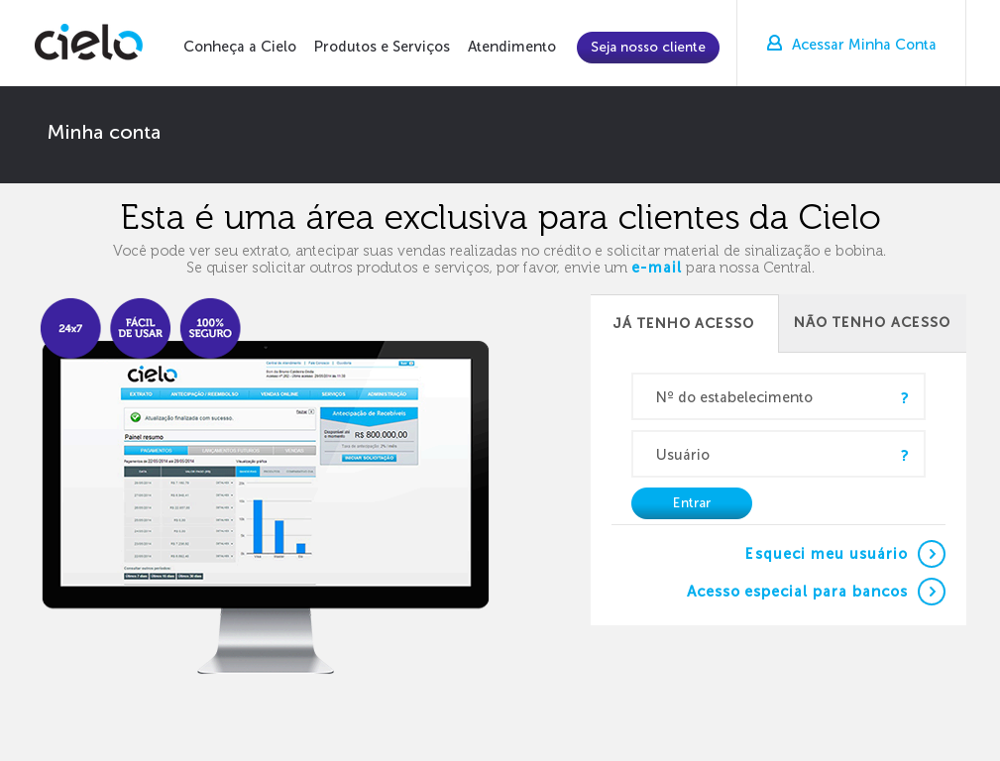
No menu da sua área restrita, clique em “Vendas Online” e em seguida “Checkout Cielo”. Pronto! A partir daí você poderá gerenciar seus pedidos, capturar ou consultar suas vendas, realizar configurações técnicas, mandar e-mail para o suporte e muito mais!
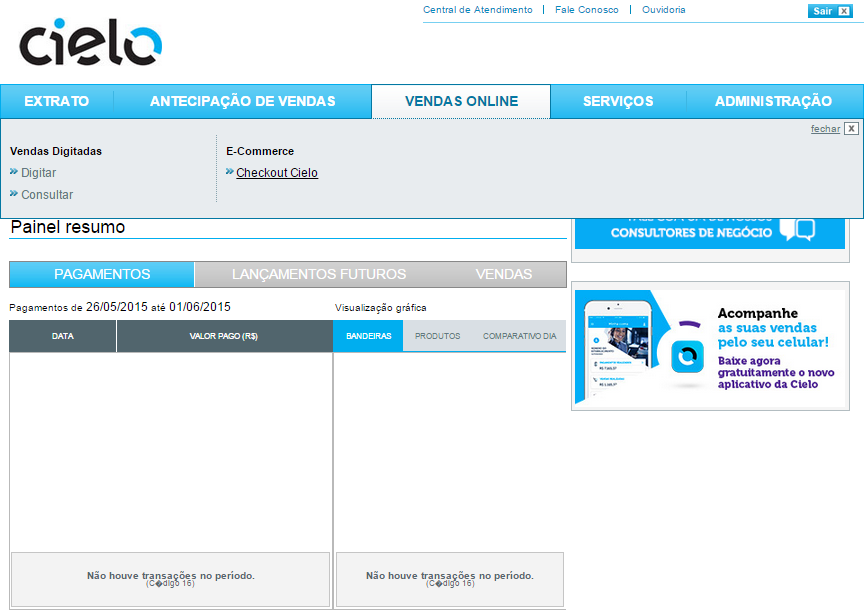
Páginas do Backoffice Cielo
O Backoffice é formado por 6 paginas diferentes de administração do Checkout Cielo. Elas são:
- DashBoard - Pagina inicial onde são apresentadas informações sobre a sua conta e sobre o volume e tipo de transações que sua loja vem realizando vio Checkout Cielo.
- Pedidos - Nessa pagina fica contida toda a listagem de transações realizadas por um determinado periodo de tempo no Checkout Cielo.
- Produtos - Nessa pagina são listados todos os produtos cadastrados no Checkout Cielo. Tambem é possivel fazer uma busca pelo nome do produto nesta pagina.
- Relatórios - Nesta pagina é possivel gerar 03 tipos de relatorios: Relatório financeiro, Detalhado de vendas e Listagem de clientes.
- Suporte - Nesta pagina constam os manuais do Checkout Cielo, assim como a pagina de FAQ e de “Duvidas”, onde o lojista pode entrar em contato com a equipe de suporte Checkout Cielo.
- Configurações - Página onde é possivel fazer alterações nas configurações da Loja, dos seus dados cadastrais e Alterar sua Senha.
DashBoard
Pagina inicial onde são apresentadas informações sobre a sua conta e sobre o volume e tipo de transações que sua loja vem realizando vio Checkout Cielo.
Tipos de informações
Nessa tela você encontra dois tipos de informações:
- Alertas – Indica se há pedidos a expirar na data presente.
- Volume financeiro e transacional - São gráficos interativos que demonstram em porcentagem (e em valores totais) qual a participação de cada meio de pagamento no total de transações realizadas e o volume total de acordo com o status das transações.
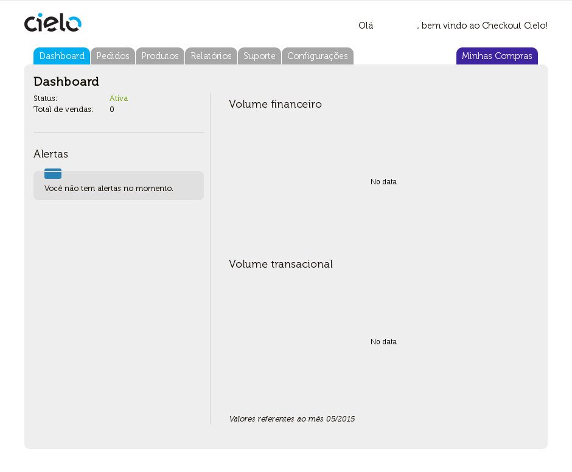
Pedidos
Nessa pagina fica contida toda a listagem de transações realizadas por um determinado periodo de tempo no Checkout Cielo. Nessa pagina é possivel pesquisar um determinado pedido , via a colocação de um determinado parametro de busca nos campos la existentes ou desmarcando os “checkbox” dos “Meios de pagamento” ou “Status de pagamento” e apertando o botão “Buscar”.
O resultado da pesquisa é exposta em forma de uma listagem de operações. Essa listagem pode ser exportada como forma de excel.
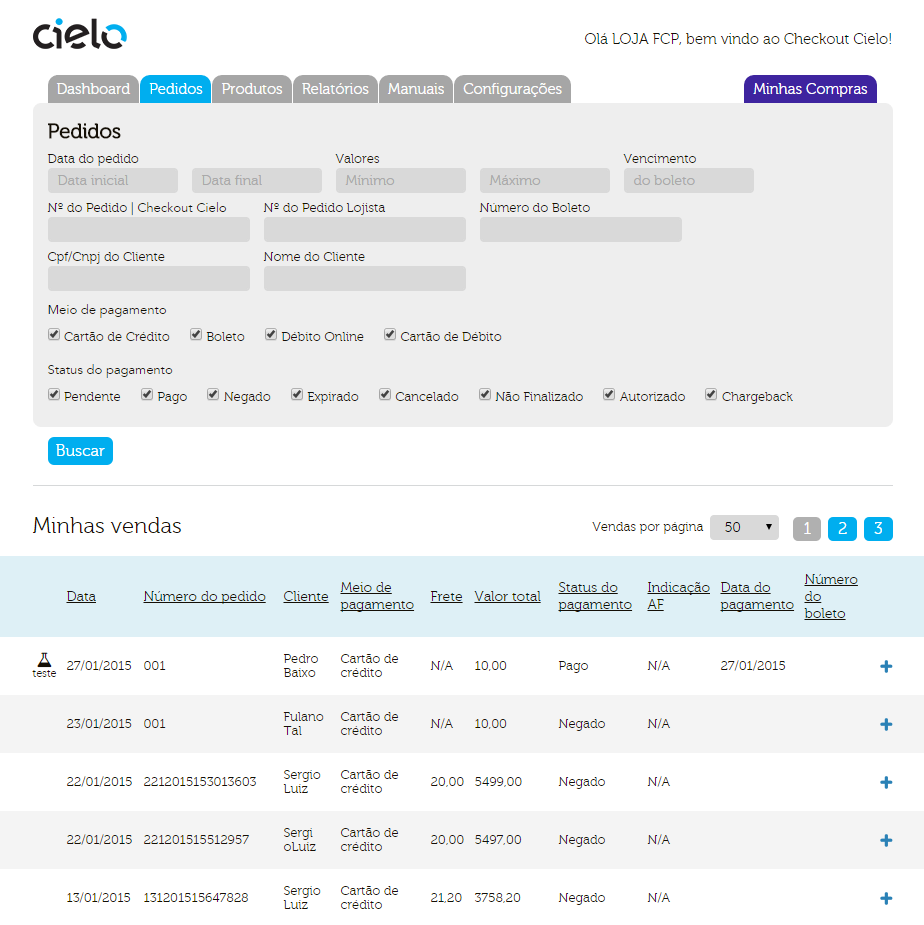
Produtos
Nessa pagina são listados todos os produtos cadastrados no Checkout Cielo. Tambem é possivel fazer uma busca pelo nome do produto nesta pagina. A lista de produtos pode ser exportada no formato Excel.
No menu Produtos, há também outras duas áreas: Cadastrar de produtos e Listar Produtos Cadastrados.
Listar Produtos Cadastrados
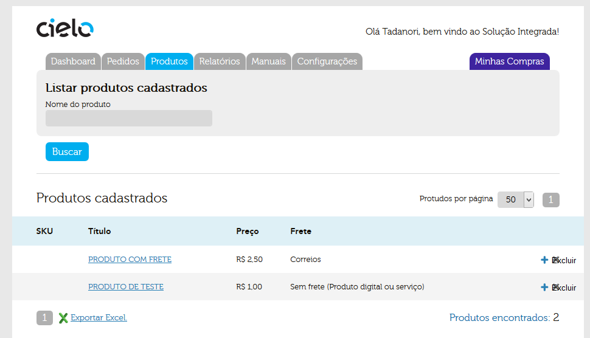
Clicando no Titulo ou SKU do produto, você será redirecionado a página de informações de Produto, onde todas as caracteristicas do produto são informadas e onde você pode definir o padrão do Botão (caso a sua integração seja com base no Botão Checkout Cielo) a ser usado na venda desse produto.
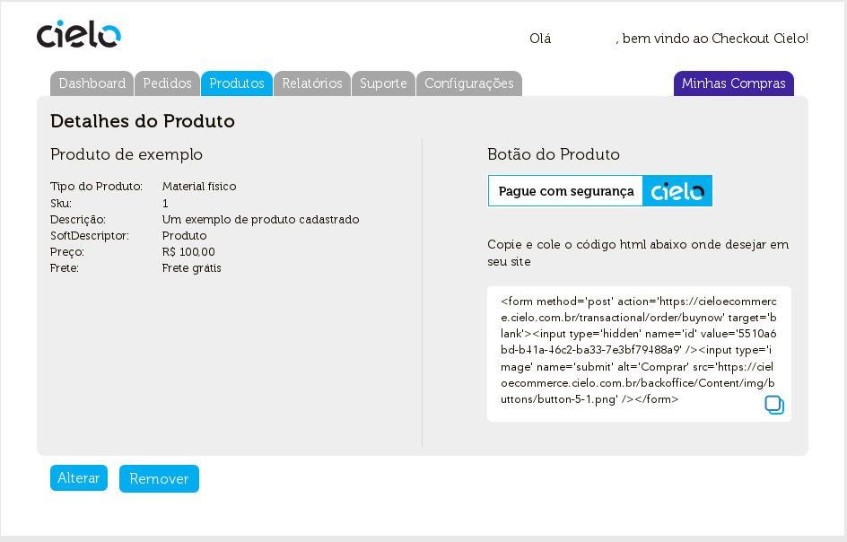
Cadastrar de Produtos
Nessa pagina é possivel cadastrar seus produtos com base no tipo de produto em si. O Checkout Cielo considera 3 tipos de produtos: Material Fisico, Digital e Serviço.
- Material Fisico – Produtos Fisicos que necessitam ser enviados pelos lojistas. Ex: Roupas, Brinquedos, etc.
- Digital – Bems digitais vendidos pela internet. Ex: Software, Jogos , Musicas, etc.
- Serviço – Serviços a serem prestados. Ex: Entrega delivery, projetos e orçamentos.
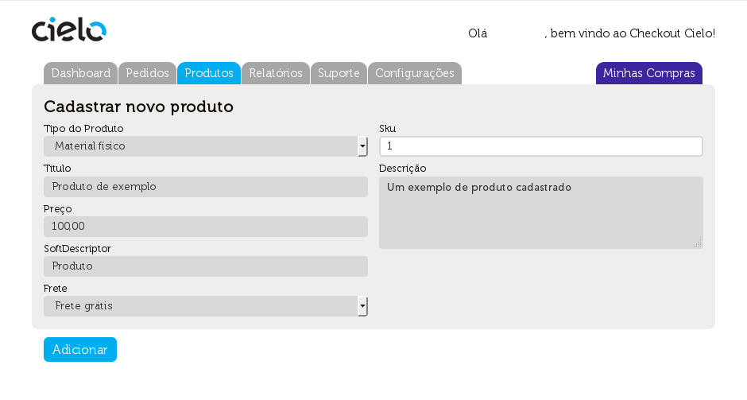
Relatórios
Nesta pagina é possivel gerar 03 tipos de relatorios: Relatório financeiro, Detalhado de vendas e Listagem de clientes.
Relatorio Financeiro
Esse relatorio apresenta as vendas pagas em um determinado periodo de tempo, sendo separadas por meio de pagamento. Selecionando o periodo e tipo de pagamento, após pressionar “Buscar” o resultado será apresentado.
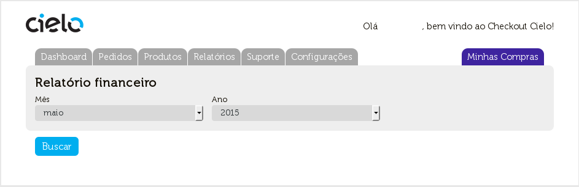
Relatório detalhado de vendas.
Esse relatorio informa o valor de cada pedido assim como dados sobre o produto e o comprador. O relatorio somente informa dados dos pedidos considerados com status “PAGO”.
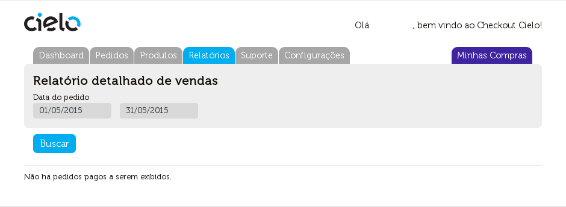
Listagem de clientes
A listagem de clientes gera um arquivo excel contendo os dados dos clientes que realizaram compras em sua loja.
Os dados apresentados são:
- Nome
- Telefone
- CPF
- Endereço (como descrito pelo cliente ou como retornado pela informação do CEP)
- Numero
- Complemento (se houver)
- Bairro
- Cidade
- Estado
- CEP
Extrato de cobrança
A lista do valor cobrado pelos serviços oferecidos pela Cielo será apresentada neste relatório. Todos os dados dos planos e custos transacionais serão apresentados aqui:
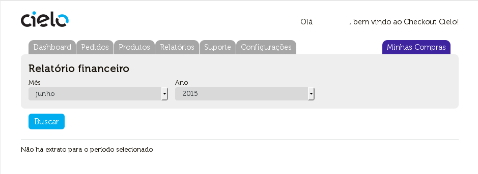
Suporte
Nesta aba constam os manuais do Checkout Cielo, assim como a pagina de FAQ e de “Duvidas”, onde o lojista pode entrar em contato com a equipe de suporte Checkout Cielo.
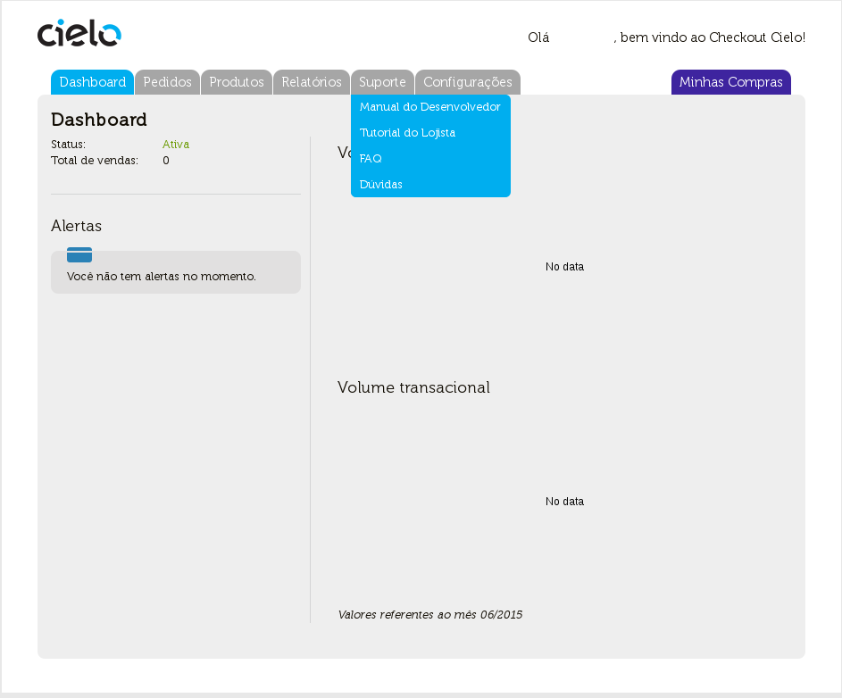
Nessa pagina é possivel entrar em contato a respeito de duvidas Operacionais, tecnicas e Comerciais e ter acesso aos documentos técnicos e de suporte do Checkout Cielo.
- Manual do Desenvolvedor – Contém os procedimentos e diretrizes de integração do Checkout Cielo ao seu site.
- Tutorial do Lojista – Principal fonte de informação sobre a utilização do Checkout Cielo do ponto de vista do Lojista
- FAQ – Perguntas mais comuns a respeito do Checkout Cielo. Contem informações sobre questões Comerciais, Técnicas, Operacionais e sobre o Modo de teste.
Configurações
Página onde é possivel fazer alterações nas configurações da Loja, dos seus dados cadastrais e Alterar sua Senha.
Configurações da Loja
Nesta pagina é possivel fazer configurações em diferentes mecanismos dentro do Checkout Cielo. Essa área é dividida em 4 partes diferentes: Exibição, Pagamentos, Antifraude, Frete de Correios & serviços.
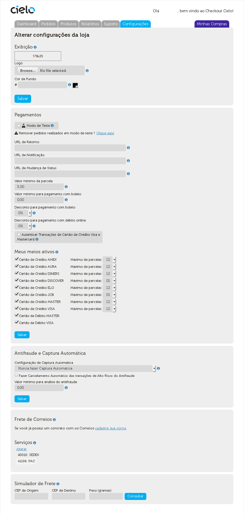
Exibição
Aqui é possivel alterar o logo do meio de pagamento disponível em sua loja e a cor de fundo do site via o uso da caixa de opções ou digitando o código relativo a cor escolhida (As cores estão no padrão RGB).
Pagamentos
Nesta tela é possivel alterar as configurações dos meios de pagamento disponiveis em sua loja , os definindo como ativos ou não, e configurar a URL de retorno, notificação e Mudança de Status.
Cartões de crédito e Parcelamento
Basta marcar a caixa de seleção do cartão que deseja disponibilizar no momento do pagamento. Para desabilita-lo, basta desmarcar a caixa de seleção O parcelamento é definido por bandeira de cartão. O numero de parcelas maximas disponibilizadas para cada cartão passa a ser definida pelo Lojista. O Checkout Cielo permite parcelamento até 12 vezes sem juros.
Há a opção de definir um valor minimo de parcelamento. O valor definido faz com que independentemente do valor da compra, o comprador somente possa fazer parcelamentos com valor acima do Valor Minimo.
Exemplo: Caso o valor minimo de parcelamento seja de R$10,00, uma compra de R$100,00 poderá ser parcelada máximo em 10x, mesmo que na configuração da loja o parcelamento em 12x esteja habilitado.
URLs principais do Checkout Cielo
As URL’s devem ser cadastradas pelo próprio lojista no seu Backoffice, na aba “configurações / Configurações da loja”.
- URL de Retorno - Ao finalizar a transação o comprador final poderá ser redirecionado para a URL de retorno. Ao clicar no botão “VOLTAR” na tela de comprovante de vendas, o comprador será direcionando para a URL de retorno previamente cadastrada no BackOffice.
- URL de Notificação - Ao finalizar uma transação é enviado um post com todos os dados da venda para a URL de Notificação, previamente cadastrada no BackOffice. O POST de notificação é enviado apenas no momento que a transação é finalizada, independentemente se houve alteração do status da transação.
- URL de Mudança de Status - Quando um pedido tiver seu status alterado, será enviando um post para a URL de Mudança de Status, previamente cadastrada no BackOffice. O POST de mudança de status não contem dados do carrinho, apenas dados de identificação do pedido.
Na tela de pedidos, dentro de cada transação, há a opção de reenvio do POST de mudança de status. Basta clicar nos botões azuis, marcados na imagem abaixo:
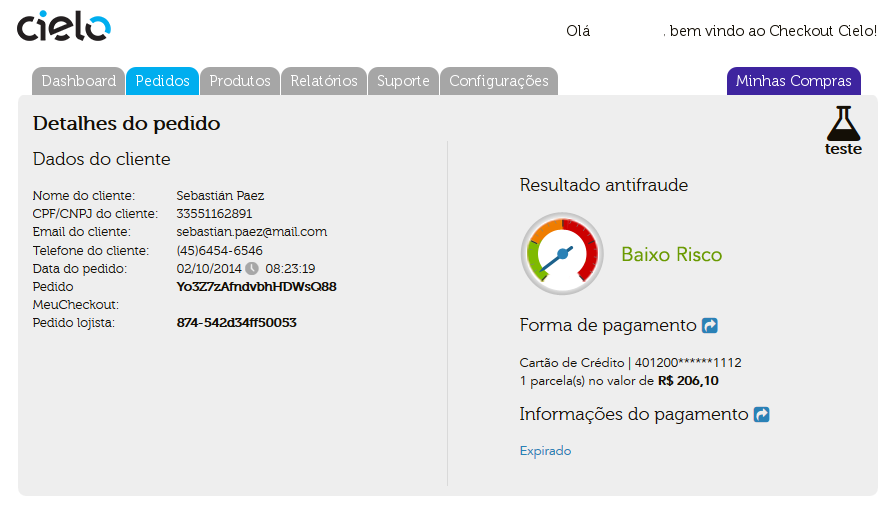
Desconto para Boletos e débito online
É possivel realizar oferecer descontos nos meios de pagamento boleto e débito online. Esse desconto pode ser definido de duas maneiras.
- Via Backoffice: Basta selecionar o valor em (%) que o meio de pagamento virá a oferecer.
- Via POST: é possivel enviar o no POST do carrinho um parametro contendo o desconto (%) que o meio de pagamento virá a oferecer.
Valor Minimo de boleto
É possivel definir um valor minimo para que o boleto seja apresentado. Compras em valor inferior ao definido não tem o boleto disponibilizado na tela de checkout.
Para evitar a situação descrita no alerta acima, sugerimos:
- Caso sua loja não tenha outros meios de pagamento, informe ao comprador sobre o valor minimo do boleto.
- Adquira outros meios de pagamento como Cartões de crédito (procedimento realizado pelo Checkout Cielo) ou débito online.
Antifraude
Aqui é possivel definir a automação dos processos de captura e cancelamento de pedidos com base no resultado da analise de anti-fraude.
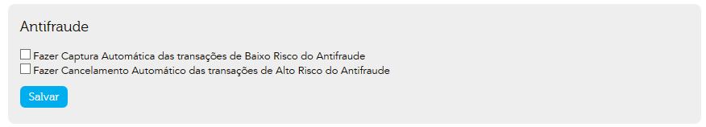
Frete de Correios & Serviços
Nesta área você configura as opções de frete disponiveis em sua Loja.
Na seção sobre informações sobre frete há uma explicação mais detalhada sobre os tipos de fretes disponiveis no Checkout Cielo. Há tambem na área de fretes de Correiros, uma calculadora de frete para consultas (essa calculadora dá o valor de frete de cada tipo de frete cadastrado para um determinado peso e localidade)
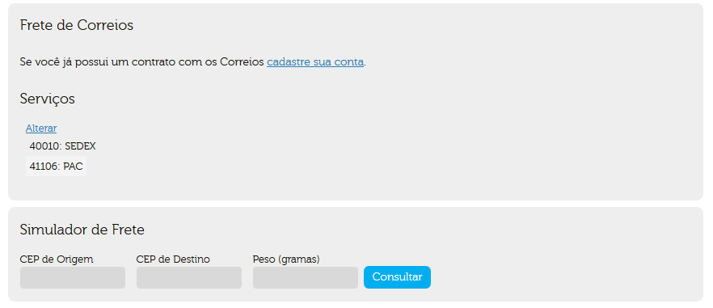
Dados Cadastrais
Nesta seção, ficam listados os dados da loja cadastrada e do Lojista.
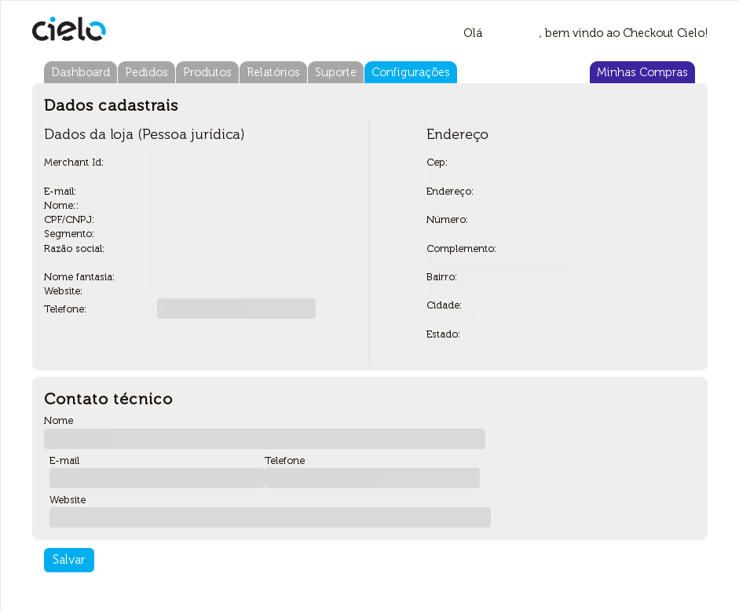
Alterar sua Senha
Aqui é possivel alterar a senha de acesso ao Checkout Cielo.
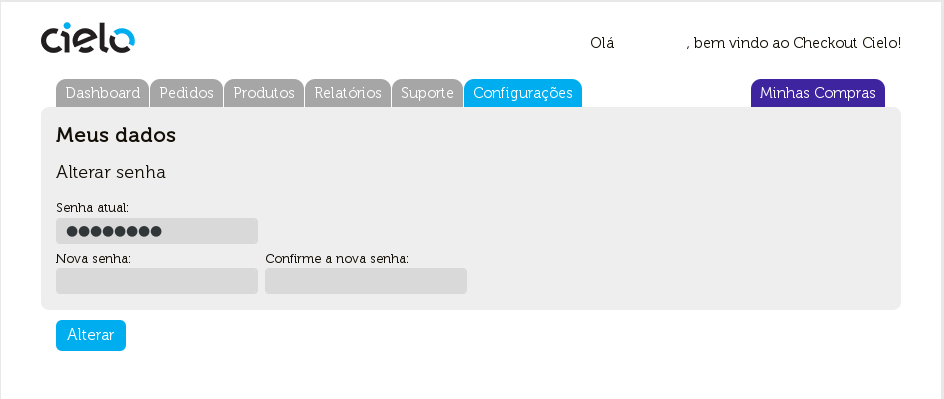